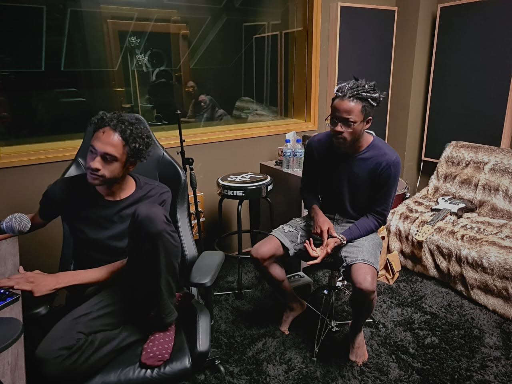

Senter Festival · Sri Lanka · 2025
Senter Festival
Leading content and multimedia for one of Sri Lanka’s largest music festivals — and keeping ten thousand people inside one story.

The Insight
A festival’s brand isn’t built the weekend it happens. For every person in the crowd, many more will only ever experience it through the content.
For a young festival in a young market, that makes content the product — the thing that converts this year’s attendees into next year’s evangelists, and this year’s absentees into next year’s ticket buyers. Treating photo and video as documentation after the fact would waste the festival’s single biggest asset.
The Idea
Treat the festival as a 365-day story with a two-day climax.
A content strategy engineered in three acts — anticipation before the gates open, capture designed shot-by-shot around what the marketing would need, and an afterglow campaign built from the weekend’s best moments. Every camera on site had a brief before the first act played.
“The show lasts two days. The story has to last a year.”
The Execution
Producer’s hat and multimedia lead’s hat, worn simultaneously:
- Directed photography and videography teams against a capture plan mapped to the post-event campaign
- Kept stages, DJ sets and crews on track in real time across the festival weekend
- Coordinated content output across channels while the event was live

The Result
The weekend ran. The story kept running.
The festival welcomed roughly ten thousand guests, and the content captured across the weekend powered the entire post-event marketing campaign — the raw material for the next year of the festival’s brand.